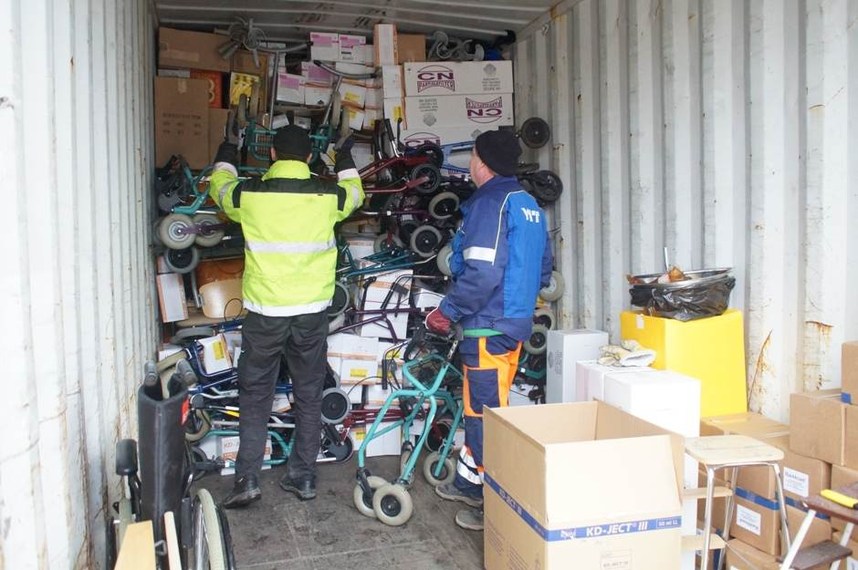

Historique de nos actions
L'Association ESAD a été créée en 2012 par des femmes et des hommes d'origine sénégalaise vivant en France. Aujourd'hui, elle compte 165 membres en Europe et en Afrique de l'Ouest.
Dans le cadre de ses missions, ESAD réalise plusieurs activités en Afrique de l'Ouest et en France : éducation, offre de matériel médical, activités agricoles, distribution de vivres, aide aux sinistrés lors des inondations, collecte de vêtements et de chaussures, etc.
Janvier 2012
2012 - Création de l'Association ESAD
Création de l’Association ESAD dans le but d’aider les populations les plus démunies et défavorisées d’Afrique de l’Ouest, et plus particulièrement du Sénégal.
Fermement convaincus de la nécessité de prendre en compte et de respecter la culture locale, nous avons pris comme partenaire privilégié de nos actions un chef religieux local, le Shaykh Mahy Cissé.
Janvier 2013
2013 - Projet Agricole
L’Association ESAD a acheté 4 hectares de terrain cultivable près des villages environnant la ville de Kaolack, au Sénégal. Là-bas nous cultivons plusieurs céréales, allant du riz au mil en passant par le maïs. De cette façon, nous donnons du travail aux jeunes sénégalais. De plus, la cueillette est ensuite distribuée gratuitement aux plus nécessiteux.
Cette action constitue une des actions pérennes les plus importantes de notre association et elle permet de nourrir plusieurs dizaines de familles en leur fournissant des denrées alimentaires indispensables.
Octobre 2013
2013 - Tabaski
La Tabaski est une des fêtes les plus importantes de la société sénégalaise, un peu comme Noël en Europe. Les gens se réunissent en famille pour partager des cadeaux et manger du mouton. A cette occasion, ESAD apporte son soutien aux familles les plus démunies en leur permettant de participer pleinement à la fête, moment clé de socialisation dans ces pays, en leur offrant un mouton, pour qu’ils ne soient pas exclus de tout lien familial.
Août 2014
2014 - Collecte de vêtements
Parmi les actions importantes d’ESAD, figure la collecte de vêtements, qui sont ensuite envoyés au Sénégal. Nous avons un réseau de généreux donateurs en France qui, soucieux du bien-être d’autrui, nous font parvenir leurs vêtements usés. De notre côté, nous nous occupons de les mettre en conditions, de les envoyer au Sénégal puis de les distribuer aux personnes les plus démunies, celles qui ne peuvent même pas s’offrir de quoi s’habiller décemment.
Octobre 2014
2014 - Tabaski
La Tabaski est une des fêtes les plus importantes de la société sénégalaise, un peu comme Noël en Europe. Les gens se réunissent en famille pour partager des cadeaux et manger du mouton. A cette occasion, ESAD apporte son soutien aux familles les plus démunies en leur permettant de participer pleinement à la fête, moment clé de socialisation dans ces pays. ESAD leur offre un mouton, pour qu’ils ne soient pas exclus de tout lien familial.
Cette année, ESAD a coopéré avec d’autres associations pour apporter un plus grand soutien aux familles les plus défavorisées.
L'évènement a été suivi par le site d'information DAKAR ACTU. Voici leur compte-rendu :
Fidèle à une tradition bien établie, Cheikh Mahi Cissé, petit-fils de Cheikh Ibrahim Niass et imam en second de la grande mosquée de Médina Baye vient encore de s’illustrer à l’occasion de l’Aïd El Kébir, en distribuant aux familles démunies, des centaines de moutons et de bœufs.
Le petit fils de Baye Niass et directeur de l’institut Africain Américain de Médina Baye créé par son défunt frère Cheikh Hassane Cissé, a initié ce projet voilà déjà quelques années. Dans ce souci d’accompagner certaines familles démunies et autres Daraas à l’occasion de la tabaski, il a été rejoint par une Fondation Sud-Africaine dénommé Gift of The Givers, une ONG SOUT iLAAHI, basée à Singapour et des talibés de Cheikh Mahi de la diaspora regroupés au sein de l’association Education, Santé, Aide au Développement (ESAD).
S’investissant personnellement, Cheikh Mahi a distribué cette année, la veille de la Tabaski, 250 moutons à des pères de famille se trouvant dans le besoin, avant d’offrir le jour et le lendemain de la tabaski, 75 autres moutons et 175 bœufs acquis en partenariat avec la fondation Sud-africaine, l’ONG de Singapour et l’ESAD basé à Paris.
Pour Mohammad Bilal Sayed, représentant de la Fondation Gift Of The Givers, si sa structure spécialisée dans l’aide au développement à travers le monde et l’Afrique en particulier accompagne depuis quelques années le marabout, c’est parce qu’elle demeure convaincue de la volonté de ce chef religieux qui joue parfaitement son rôle de partenaire au développement, en utilisant ses propres moyens.
D’ailleurs, cette Fondation compte s’installer définitivement en Afrique de l’Ouest, en ayant une représentation diplomatique basé au Sénégal.
A noter que Cheikh Mahi Cissé en dehors de cette aide apportée annuellement aux familles démunies et au Darahs, entretient plusieurs centaines d’enfants de toutes nationalités au niveau d’un daraa moderne installé à ses propres frais à Taïba Niassène.
Janvier-Mai 2015
2015 - Projet Médical
C’est notre projet le plus ambitieux jusqu’à maintenant. Bénéficiant d’une participation conjointe entre plusieurs associations et organismes situés dans différents pays, depuis le Sénégal jusqu’à la Finlande en passant par la France, ESAD a finalement réussi à mettre au point ce projet de longue haleine, dans le but d’apporter aux habitants de la ville sénégalaise de Kaolack un équipement médical qui fait cruellement défaut à leur mobilier hospitalier.
Pour obtenir un financement pour subvenir aux frais de transport, nous avons réalisé des flyers en français et en anglais.
Télécarger le flyer :
Voici les photos du chargement du container à Helsinki (Finlande) :


Arrivée prévue du container à Dakar : 29 avril 2015. On vous tiendra au courant !
Janvier 2015
2015 - Collecte de vêtements
Parmi les actions importantes d’ESAD, figure la collecte de vêtements, qui sont ensuite envoyés au Sénégal. Nous avons un réseau de généreux donateurs en France qui, soucieux du bien-être d’autrui, nous font parvenir leurs vêtements usés. De notre côté, nous nous occupons de les mettre en conditions, de les envoyer au Sénégal puis de les distribuer aux personnes les plus démunies, celles qui ne peuvent même pas s’offrir de quoi s’habiller décemment.